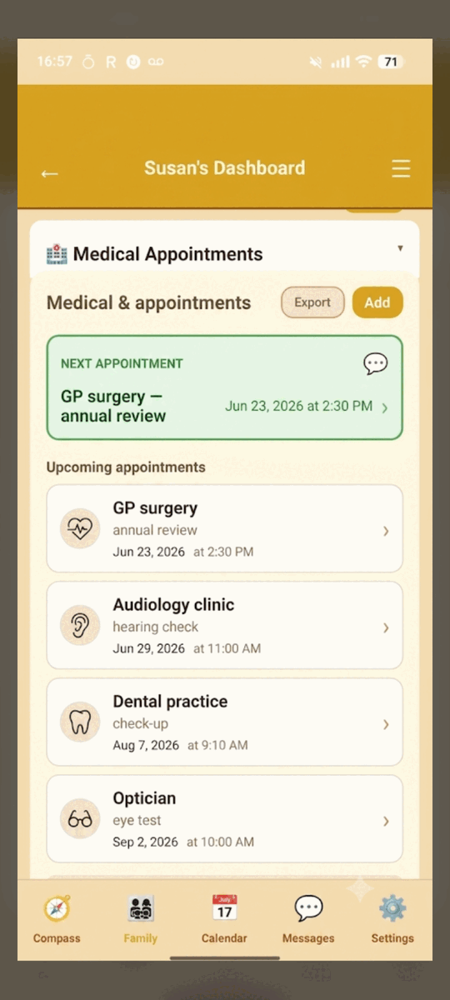

Ratgeber zur Altenpflege
Wie Sie die Pflege eines älteren Elternteils koordinieren
Ein klarer Leitfaden, wie Sie die Last teilen — über Geschwister, Apps und Termine hinweg — ohne den Überblick über das Wichtige zu verlieren.

Womit fängt man an, wenn ein Elternteil Pflege braucht?
Schreiben Sie zunächst alles auf, was Sie bereits im Blick behalten — Termine, Medikamente, wer zu Besuch war, was besprochen wurde. Die meisten Familien stellen fest, dass das eigentliche Problem die Zersplitterung ist: der Standort in einer App, der Kalender in einer anderen, die Medikamente auf einem Klebezettel und Geschwister-Updates verloren in einem Gruppenchat. Alles an einen gemeinsamen Ort zu bringen ist meist die erste Erleichterung.
Das Schwerste ist selten eine einzelne Aufgabe. Es ist die geistige Last, alles im Kopf zu behalten — und die leise Angst, etwas fallen zu lassen, weil es an vier verschiedenen Orten lag.
Wenn Informationen verstreut sind, wird die Person, die sich zufällig erinnert, zum inoffiziellen Koordinator. Diese Rolle landet standardmäßig bei einem Geschwisterkind, und daraus wächst Groll.

Ein einfaches Ziel hilft: ein Ort, den alle sehen können, der Kalender, Medikamentenverzeichnis und das Familiengespräch zusammenhält. Genau dieses Problem soll FamilyCompass lösen.
Wie teilt man die Pflege unter Geschwistern ohne Chaos?
Geben Sie allen dieselbe Ansicht. Ein gemeinsamer Kalender zeigt, wer die nächste Fahrt zum Krankenhaus übernimmt; ein verschlüsselter Familien-Chat hält das Gespräch in einem Verlauf statt in verstreuten Nachrichten; und ein einziges gemeinsames Verzeichnis bedeutet, dass niemand erneut fragt, was bereits beantwortet wurde. Mit einem Pflegekreis sieht jedes Geschwisterkind dieselben Informationen und kann dort weitermachen, wo ein anderes aufgehört hat.
Die meiste Reibung unter Geschwistern entsteht nicht aus Unwillen — sondern aus mangelnder Sichtbarkeit. Wenn eine Person nicht sehen kann, was eine andere bereits getan hat, wird Arbeit doppelt erledigt oder still vergessen.
Ein Pflegekreis in FamilyCompass lässt Sie die Personen einladen, denen Sie vertrauen — Geschwister, einen Partner, eine enge Freundin —, sodass alle einen Kalender, einen Chat und ein Verzeichnis teilen. Kein einzelner Türwächter, der alle Details hält.
Es macht auch die unsichtbare Arbeit sichtbar. Wenn jeder Besuch und Anruf am selben Ort erfasst wird, kann die Familie endlich sehen, wer was trägt, und die Last fairer teilen.
Wie behält man Medikamente sicher im Blick?
Führen Sie ein gemeinsames, schriftliches Verzeichnis. Wer bei Ihrem Elternteil ist, erfasst, dass eine Dosis gegeben wurde, und alle im Pflegekreis sehen denselben Eintrag — sodass die Familie auf demselben Stand bleibt und eine genaue Historie mit Hausärztin/Hausarzt oder Apotheke teilen kann. FamilyCompass hilft Ihnen, zu erfassen und zu sehen, was protokolliert wurde; es ist ein Koordinationswerkzeug, kein Medizinprodukt.
Das alltägliche Risiko ist selten dramatisch. Es sind zwei Personen, die jeweils annehmen, die andere habe die Morgentabletten übernommen, oder niemand ist sicher, ob sie überhaupt eingenommen wurden.
Ein gemeinsames Protokoll ersetzt diese Unsicherheit durch ein klares Verzeichnis. Jeder im Kreis kann nachsehen, was eingetragen wurde, und die Familie bringt eine einheitliche Historie zu Terminen mit, statt halb erinnerter Bruchstücke.

Wie weiß man, wo der Elternteil ist, ohne die Privatsphäre zu verletzen?
Nutzen Sie ein Standortteilen, dem Ihr Elternteil zustimmt und das es steuert. Mit FamilyCompass ist der Standort Ende-zu-Ende-verschlüsselt und nur für die Familienmitglieder sichtbar, die Ihr Elternteil gewählt hat — nie für uns und nie für Werbetreibende. Ihr Elternteil kann das Teilen pausieren oder beenden, wann immer es möchte. Einwilligung und Würde stehen an erster Stelle; das ist Beruhigung, keine Überwachung.
Es gibt einen echten Unterschied zwischen dem Wissen, dass ein Elternteil sicher nach Hause kam, und dem Beobachten jeder seiner Bewegungen. Das Erste ist Fürsorge; das Zweite untergräbt das Vertrauen, von dem das ganze Arrangement abhängt.
Weil das Teilen freiwillig und umkehrbar ist, bleibt Ihr Elternteil in der Verantwortung. Viele Familien nutzen es zurückhaltend — eine einfache „sicher angekommen"-Beruhigung nach einem Ausflug statt ständiger Ortung.

AI Pieces verkauft keine Daten und kann den Standort Ihrer Familie nicht lesen. Wie das genau funktioniert, können Sie auf unserer Datenschutzseite nachlesen.
Worauf sollte man bei einem Koordinationswerkzeug achten?
Achten Sie auf einen Ort, der Kalender, Medikamentenunterlagen, Standort und Familien-Chat vereint — mit echter Ende-zu-Ende-Verschlüsselung und ohne Datenverkauf. Prüfen Sie, ob es für den ganzen Kreis funktioniert, ob Ihr Elternteil die Kontrolle über seine Daten behält und ob das Unternehmen ehrlich darüber ist, was es tut. Seien Sie vorsichtig bei allem, was behauptet, den Pflegebedarf zu beurteilen oder professionelle Beratung zu ersetzen.
Eine ehrliche Checkliste hilft. Sind die Daten verschlüsselt? Können alle Geschwister beitreten? Kann Ihr Elternteil einwilligen und sich abmelden? Ist klar, was es ist — und was nicht?
- Eine gemeinsame Ansicht: Kalender, Medikamentenverzeichnis, Standort und Chat zusammen.
- Ende-zu-Ende-Verschlüsselung und ein klares „Kein Datenverkauf"-Versprechen.
- Pflegekreise, damit Geschwister teilen, ohne einen einzelnen Türwächter.
- Einwilligung des Elternteils und einfache Abmeldung bei jedem Standortteilen.
- Ehrlicher Umfang — eine Koordinationshilfe, kein klinisches oder Beurteilungswerkzeug.
Um ehrlich zu sein: FamilyCompass befindet sich derzeit in der Beta, und wir verfeinern es weiterhin mit Familien in mehreren Ländern. Es ist eine Koordinations-App, kein klinisches Beurteilungswerkzeug, und es ersetzt keine professionelle Pflegebeurteilung oder medizinische Beratung.
Bringen Sie die Pflege Ihrer Familie an einen privaten Ort
FamilyCompass hält Standort, Medikamentenunterlagen, Termine und Familien-Chat zusammen — Ende-zu-Ende-verschlüsselt, ohne Datenverkauf. Jetzt in der Beta.
An der FamilyCompass-Beta teilnehmenHäufig gestellte Fragen
Kann ich sehen, ob mein Elternteil seine Medikamente eingenommen hat?
Sie können sehen, was Ihre Familie erfasst hat. FamilyCompass führt ein gemeinsames Medikamentenverzeichnis, sodass derjenige, der bei Ihrem Elternteil ist, vermerken kann, dass eine Dosis eingenommen wurde, und alle im Pflegekreis denselben Eintrag sehen. Es ist ein Werkzeug zur Koordination und Dokumentation, kein Medizinprodukt, und es erkennt oder diagnostiziert keine ausgelassenen Dosen.
Muss jedes Geschwisterkind es installieren?
Jede Person, die teilnehmen möchte, installiert die App und tritt dem gemeinsamen Pflegekreis bei. Alle sehen dann denselben Kalender, dieselben Unterlagen und denselben Familien-Chat. Es gibt keinen zentralen Administrator, der den Zugang steuert — die Familie lädt die Personen ein, denen sie vertraut, und jedes Mitglied nutzt sein eigenes privates, verschlüsseltes Konto.
Sind die Standortdaten meines Elternteils privat?
Ja. Das Standortteilen ist Ende-zu-Ende-verschlüsselt und nur für die Familienmitglieder sichtbar, mit denen Ihr Elternteil zugestimmt hat zu teilen. AI Pieces kann den Standort Ihres Elternteils nicht sehen, und wir verkaufen oder teilen Daten niemals an Werbetreibende. Ihr Elternteil kann das Teilen jederzeit pausieren oder beenden.
Funktioniert es, wenn mein Elternteil kein Smartphone hat?
Familienmitglieder können sich weiterhin untereinander koordinieren — der gemeinsame Kalender, die Medikamentenunterlagen, Termine und der Chat funktionieren alle, ohne dass Ihr Elternteil ein Handy hat. Standort- und Check-in-Funktionen benötigen ein Gerät, das Ihr Elternteil bei sich trägt, daher hängen diese davon ab, dass Ihr Elternteil ein Handy hat, mit dem es sich wohlfühlt.
Ist es kostenlos?
FamilyCompass befindet sich derzeit in der Beta, und Beta-Tester erhalten kostenlosen frühen Zugang. Die endgültigen Preise stehen noch nicht fest. Sie können sich jetzt auf die Warteliste setzen, um es auszuprobieren und vor Beginn eines kostenpflichtigen Tarifs über die Preise informiert zu werden. Es besteht keine Verpflichtung, fortzufahren.
Ist FamilyCompass ein medizinisches oder pflegerisches Beurteilungswerkzeug?
Nein. FamilyCompass ist eine Familienkoordinations-App, kein Medizinprodukt, und es beurteilt keinen Pflegebedarf und ersetzt keine professionelle Beratung. Für Entscheidungen über die Gesundheit oder den Pflegegrad Ihres Elternteils wenden Sie sich an dessen Hausärztin/Hausarzt, Apotheke oder eine qualifizierte Pflegeberatung. FamilyCompass hilft Ihrer Familie lediglich, organisiert und verbunden zu bleiben.